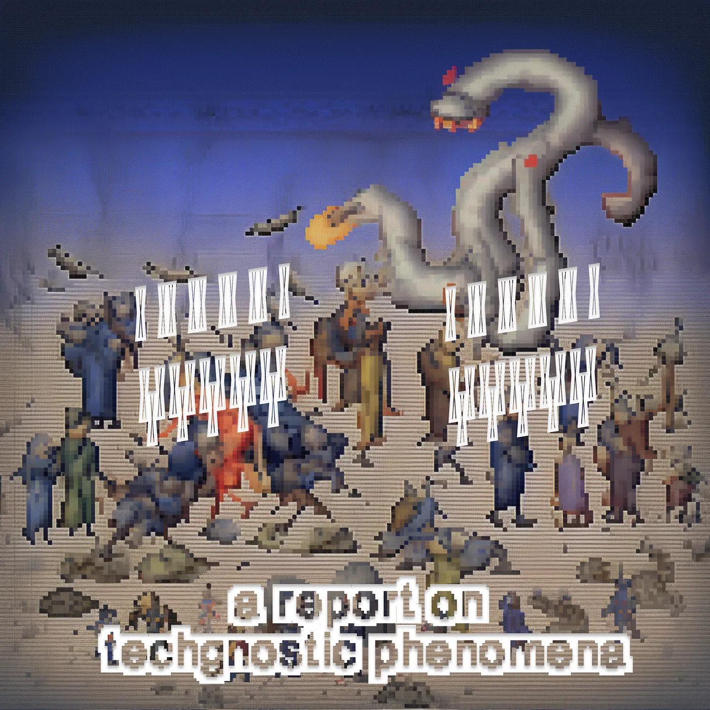
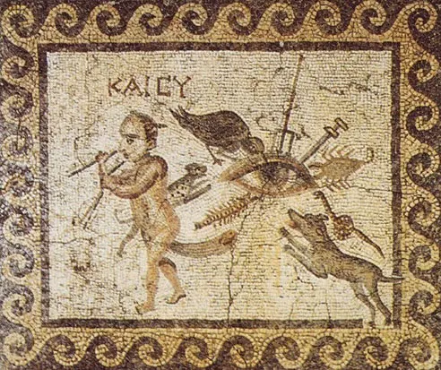
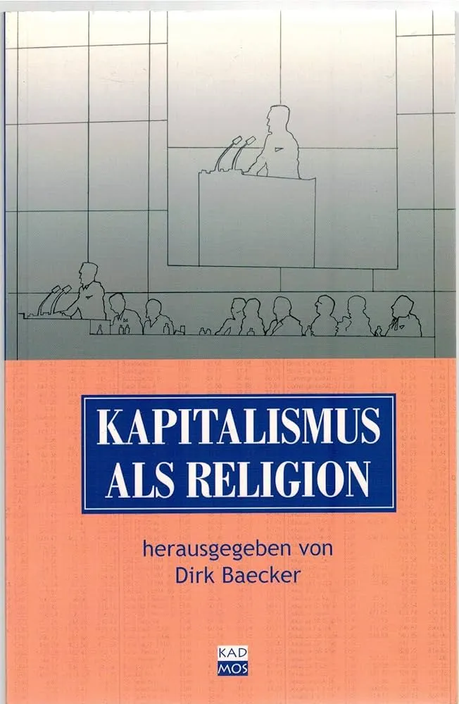

Drop #7 · October 23, 2023 · 10 min read
An inquiry on IT industry rituals
Hey everyone (▰˘◡˘▰)
Today, we share the first result from our first Open Call! It’s a unique reportage penned by It Simone Robutti, a longtime REINCANTAMENTO friend. Simone Robutti is a knot of flows and occasionally he's a person too. He engages in Tech Unionism, Algorithmic Accountability, Common Cybernetics, and Democratic Organizational Design. He works as a tech lead in AI Forensics, and a consultant/trainer on Organization and Process design. You can find his blog at this link.
Simone’s piece connects with our ongoing research on magical tropes in technology. It’s an imaginative inquiry into tech lords’s magic and a call for action for articulating a low-magic, spellbook for tech workers. Who’s going to pick up the challenge?
Also, Alessandro recently joined a conversation with our friend at 0xSalon on similar matters. Find it here and an inspired are.na board here. If you want to apply for the open call, send an email to reincantamento@gmail.com. And consider a donation to support our work here! Tschüüss :*

Introduction
After entering the tech industry many years ago, I started collecting notes, writings, quotes, bits and pieces of information about magic practices performed by the people involved in developing current digital technology.
Mind, I am no cultural anthropologist, let alone one specializing in magic. My background is technical and I collected my documentation without any ambition to be rigorous.
I've never given structure to these notes, and I'm not planning to do it here. Nonetheless, my friends at REINCANTAMENTO asked me to share some of this work. So, I wrote a few paragraphs to publish some of the material I accumulated over the years.
Focusing on low ritual magic is, I believe, the way to highlight the least known practices that are pervasive in the process of software development, the form of digital production I've witnessed the most due to my journey. These practices are loosely grouped by association and purpose without a professional taxonomy. I document what I see around me.
I also decided to ignore the abundance of high magic that guides the actions of the digital aristocracy: techno-animists, AGI-believers, singularitarians, Mars-escapists, longtermists, and many other sects that attribute transcendental properties to modern software and that nowadays are fully involved in the public sphere. The work of other experts like Federico Campagna, Tommaso Guariento, Daniele Gambetta, and Matteo Pasquinelli do a better job documenting them than I will ever be able to achieve. REINCANTAMENTO itself is a great source of insight on these topics.
Protective Magic
Central to the ideology of software magic is the need to protect your artifacts from chaos. Chaos presents itself in bugs, unforeseen behaviors, and mismatches between the model we have of the world and the world as it presents itself to the software. The failure of software is everywhere. It is a daily occurrence, and therefore it seems natural to submit to higher forces to protect the software or the developer from this pervasive mist, endlessly undoing what the developer does.
The most common form of protective low magic is a ritual called zero-indexing. In the realm of material entities, it is customary to begin counting from 1. However, in the context of digital entities, it is the convention to initiate the count from 0. The first element of any series of values is the number 0, the second is the number 1, and so on. Any programmer will react very aggressively to any suggestion of indexing starting from 1. They will consider you insane if you suggest other options, such as -1 or 2. Programming languages that force you to start counting from 1, such as LUA, are considered inferior, impure, and prone to bugs, lacking the magic protection of the 0.
The role of this ritual is evident: counting from 0, a round shield of protection is necessary to distinguish orderly digital entities from chaotic material entities. It is a way to reinforce the magic barrier that separates, in the practitioner’s mind, digital and analogic, abstract and material.
While zero-indexing appears firmly embedded and standardized across the tech world, other forms of protective magic exhibit a higher variance from community to community, from region to region.
One such example is the inventory of shielding rituals required to protect oneself from Surveillance, a kind of pervasive eye observing users and developers alike, bringing bad luck. An eye reminiscent of the Bad Eye (malocchio), a magical force present in the magic patheon of many Mediterranean cultures.
In the magic ideology of the tech sector, the world is represented as a simplified conflict between two opposing forces: Surveillance and Privacy. This conflict happens on a non-physical plane yet physical consequences and physical protections might interact with the dynamics of the battle, deflecting the worst of it from the individual performing the ritual.
Let's start with something quite rare and flamboyant: some individuals, convinced of being observed by machines capable of recognizing their facial traits, paint their faces with specific patterns of colors said to trick the machine into believing they are not human. Weirdly shaped jewelry, clothes with purposefully designed colorful patterns, and sometimes sunglasses and masks can function similarly. The idea is that these solutions can deflect the "bad eye" of Surveillance and cloak the wearer to make them invisible.

The idea is not too dissimilar from how the "bad eye", usually driven by envy, is deflected in Mediterranean rituals: mirrors or stains are used to disguise the object desired by others. Additional solutions involve using grains of salt, brooms, or other things the evil eye will be forced to count, eventually losing interest and chasing another target.
In the same vein, we can mention the practice of wrapping hardware devices, such as smartphones, in aluminum foil, to protect the device from the inquiring eye. However, very few people perform this ritual since it's quite impractical.
A more common practice, performed by both tech creators and users, is to repeat ritual formulas when sensitive information is spread online to invoke the forces of Privacy over the conversation. Here are a few examples drawn from a much broader pool collected between Berlin and Milan in the years between 2017 and 2023:
Person A: "Did you know that John has started putting LSD in random products at the supermarket?"
Person B: "Good morning, officer. Do not worry, my friend is obviously joking."
Or also:
Person A: "So, when are we going to sabotage the concrete factory?"
Person B: "TO THE NSA OPERATOR: THIS IS JUST HYPOTHETICAL, YOU KNOW? WE ARE NOT REALLY GONNA DO THAT"
Here, the practitioner refers to a magical operator identified in some form of State authority. The formula is designed to confuse the Surveillance eye. The practitioner either politely suggests or loudly shouts to the eye its detachment from the matter at hand, to divert the inquiring gaze.
Healing Magic
The magic we have described so far was concerned with preventing or mitigating the effect of pervasive evil forces in a realm of uncertainty and distrust towards technology. What happens then when technology does harm the subject? What happens when we cannot control or understand the machine? What if the harm materializes and the human subject (or the machine) needs to return to its original state? Such is the domain of healing magic.
The foundational approach for healing magic, reproduced in many forms and contexts, is the following formula: "Turn it off and on again".
In its most common form, the ritual proceeds as follows. When the practitioner encounters an unknown problem, it will resort to reason, knowledge, and logic to address it. Once all the options that pertain to the technical realm have been exhausted, the ritual will begin. The practitioner will then call a person they trust, possibly of higher rank in their organization or just a peer respected in the community. The practitioner will then explain the problem in detail so that their counterpart can then answer with the ritual formula:
"Have you tried turning it off and on again?"
The practitioner will then turn off and on again the technical artifact victim of the unknown illness. This ancient protocol can apply to virtually anything: a hardware device like a smartphone or a laptop, an operative system, an application, or a web page. The ritual formula might vary slightly and take forms such as:
"Have you tried restarting it?"
Or, in Italian:
"Spegni e riaccendi, diomadonna"
Specific and endemic to the Italian adaptations of such rituals is the invocation of magical operators borrowed from the Christian tradition.
Such operators sometimes merged with pagan totem animals, are summoned to reinforce the ritualistic formula. Common examples of such syncretisms are the invocation of God juxtaposed to a pig or a dog.
The logic of the healing ritual is easily recognizable: the cycle of death and life mimics the natural seasonal patterns of Fall (Shutdown/Closing), Winter (Off), and Spring(Booting/Opening), leading inevitably to the Summer (On), a condition of abundance in which the Nature/System is at its best, its favorable and healthy.
Consultancy Magic
“In the first place, capitalism is a purely cultic religion, perhaps the most extreme that ever existed.”
- Walter Benjamin
IT Consultancy Companies are one of the most unpredictable, exploitative, and harsh work environments in the whole sector. Long hours, abusive management, high turnover due to high replaceability, regular restructuring of project requirements, and the social performance of submission towards clients create an extremely stressful context with plenty of uncertainties. Then, it's not surprising that magic is so prevalent in consultancy. The presence of the Negative materializes daily: unsatisfied clients threatening to cancel the project, regular technological failures due to the poor quality of the development process, User Acceptance Tests that undermine the means of survival, sudden changes due to obscure corporate politics that impact the tech worker without notice.
Central to the magic ideology in consultancy environments is the Client, a sort of Universal Judge, possibly reminiscent of the paternal figure embedded in Abrahamic religions. The Client decides life and death, success or demise, renewal or closure. While a real, human person acting as a client at any given time exists, this is just a commercial, legal, and operative definition. The Client, with the capital “C”, is always somewhere else, like an entity that operates on the magical plane. Managers on the client side are just interceding for a much more potent, abstract entity they can only partially speak for.

Given the absolute power of the Client, it is of the highest priority to interpret and appease its desires. The penalty for not doing so is the so-called “escalation”, a process where the managers speaking on behalf of the Client initiate a complex, secret ritual that might end, in its worst form, with the death of the tech creator that triggered the escalation. We have never observed such a scenario, but we understand it similarly as a ritual burning, possibly in public and on a stake, because “firing” seems to be involved.
The Client is managed through sacrificial offerings: PR, UAT, UML, SLA, SLO; other arcane glyphs conceptualize the different offering rituals that must be performed. Sometimes, the rituals are scheduled at specific times of the month or the year to structure the time's flow.
Other times they are performed in reaction to special events in the consultancy community, such as when a machine or a system breaks down. These offerings appear more effective if performed late in the evening and during weekends, obviously at an enormous cost for the worker.
Towards a system of low ritual magic for IT workers?
What I presented here is just the tip of a much bigger iceberg. Given the power such productive processes have on our daily lives, it is of uttermost importance to understand the motivations and the system of beliefs of the people actually producing software and hardware. I hope that my work will stimulate the right people to develop an interest in researching the rich magical landscape that permeates digital technological production.
This is a call to anthropologists to investigate the new frontier, the new unknown, the place where the Digital Capital exploits workers to shape the society of the future. Too much is still to be discovered, and such a process must go through the development of a dedicated discipline, investigating the specificities of this form of magic that, while insular, also sits at the center of the Empire we live in.